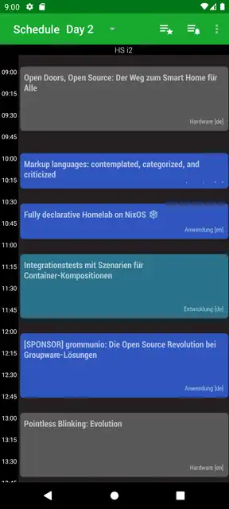
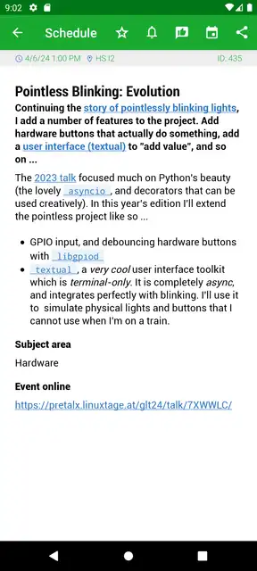

Grazer Linuxtage
إنتاجية ومهام
Schedule application for the event Grazer Linuxtage (GLT) The Grazer Linuxtage is an annual two-day conference about open-source, hardware and software. The GLT offers workshops on Fridays and talks and info booths on Saturday on a multitude of topics. Grazer Linuxtage App features: * Upcoming and l
✓ ترخيص مفتوح (Apache-2.0) · آخر تحديث: 2026-08-04
1.8.29-glt-Editionالإصدار
8.6 MBالحجم
Apache-2.0الرخصة
Open in Kanzتحميل APK (8.6 MB)
Download APK
SHA-256: 3df246102fc871c0aba648d6bb1fd207cdbc3386d5f44ccd91a56c79d5f183c4


تطبيقات تانية لنفس المطوّر (2)
More apps from this developer: at.linuxtage
امسح الكود لفتح صفحة التطبيق
Scan to open this app page
لو كنز مش متثبت عندك: نزّل متجر كنز.
Not installed? Get the Kanz store.